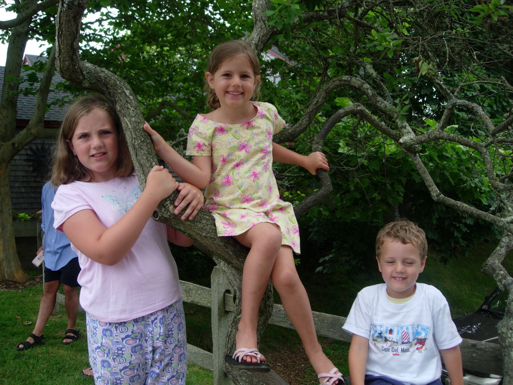

| Home | About Me | Favorite Things | Hobbies |
|---|
My name is Sophia Spaulding, though everyone calls me Sophie. I have two siblings, Sydney who is a senior in college, and Connor who is a junior in high school. My dad lives out in San Diego, and works for Intuit Co. as a software architect and My mom lives in MA, as tennis pro and director of Marcus Lewis tennis center.
I am currently Undeclared but hope to be a marketing major with a minor in dance. The reason I chose to minor in dance is because I have been dancing ever since I was little, and it is something I love to do. It is very freeing and I feel like myself when I am, so for me its something to fall back on rather than keeping it a hobby. The reason I want to major in Business Administration with a focus in Marketing is because so much can be done with it. There are so many areas I could focus in and that’s what made me fall in love with the idea of being a business major. I have worked in retail before and I loved working with customers to find the item that they love. I am also in a sorority, Delta Delta Delta.
